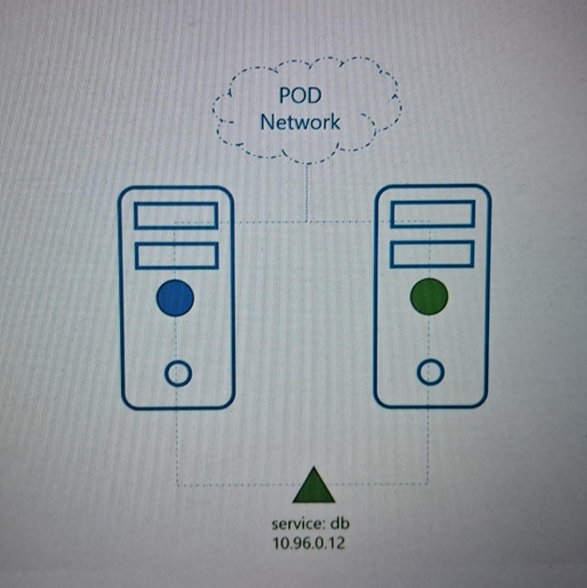
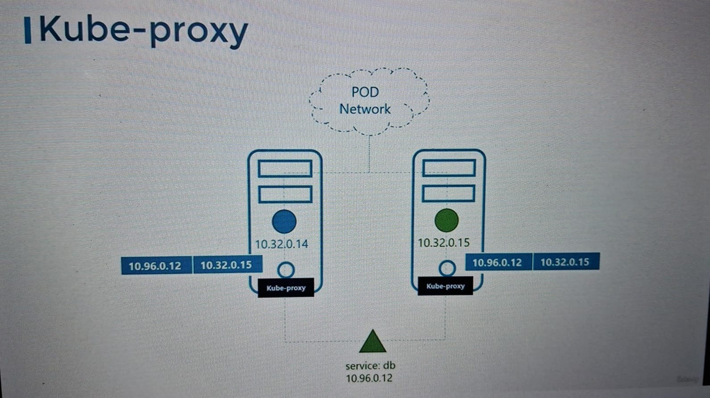
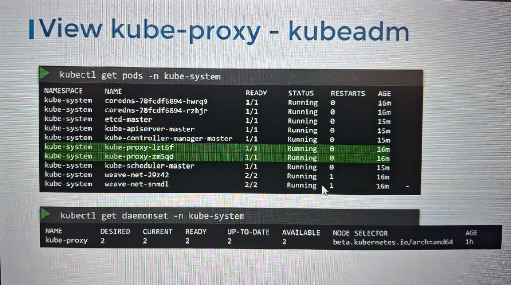

In k8 , every pod can communicate with other pods all the nodes in cluster by default its possible due pod networking.
Let suppose we have 2 pods.
One have web app and another is DB app.
As default communication is there so web app can always communicate with DB pod.
But there is no guarantee that ip for the DATABASE pod will always be same.
to ensure that the communication with the pod will always be there , database pod will introduce a services to expose DATABASE service to WEBAPP pod now database can be accessed with the service name let say "db" as showing pic below, which not a pod or a container, its just a virtual components with in the memory with a ip.
Whenever a pod tries to reach a service using its IP or name it forwards the traffic to backend PODs in this case the database pod.
Services can be accessed from any nodes from the cluster and it is due to KUBE PROXY.
KUBE PROXY runs as process on each node of the cluster and its job is to look for new services and every time a new services created , KUBE PROXY creates a appropriate rule forward traffic to those service to backend pods. one ways it does it by using IPTABLES RULES.
Like below that all traffic coming to service that is 10.96.0.12 and forward to pod ip that is 10.32.0.15. like shown below:
Kube Proxy as pod in node :
